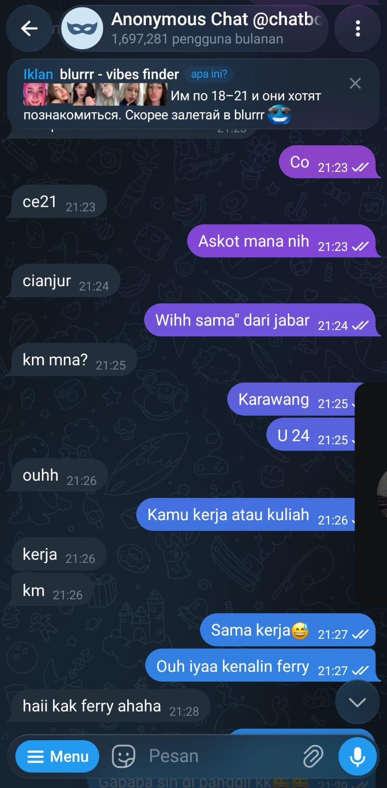
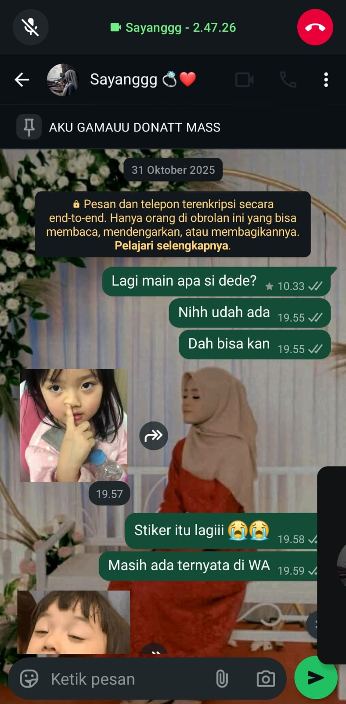
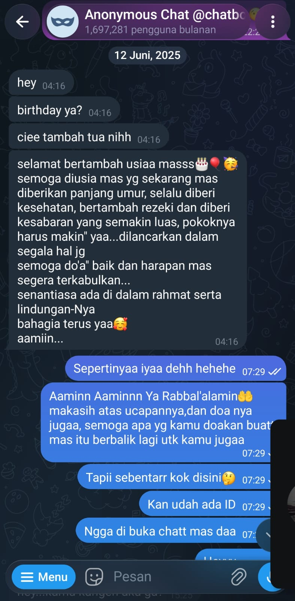
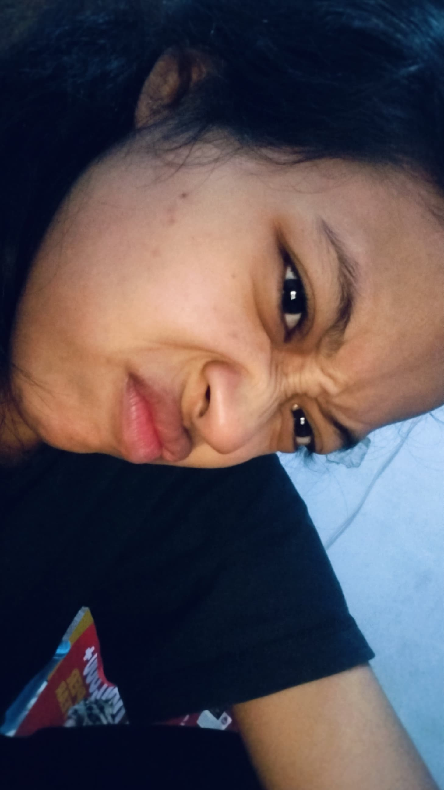
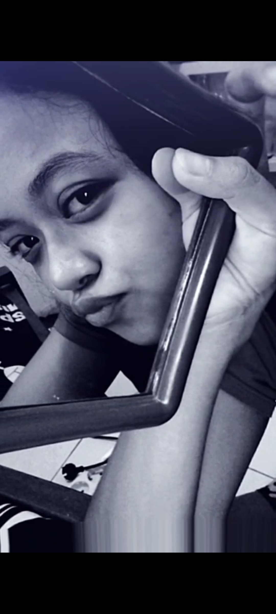
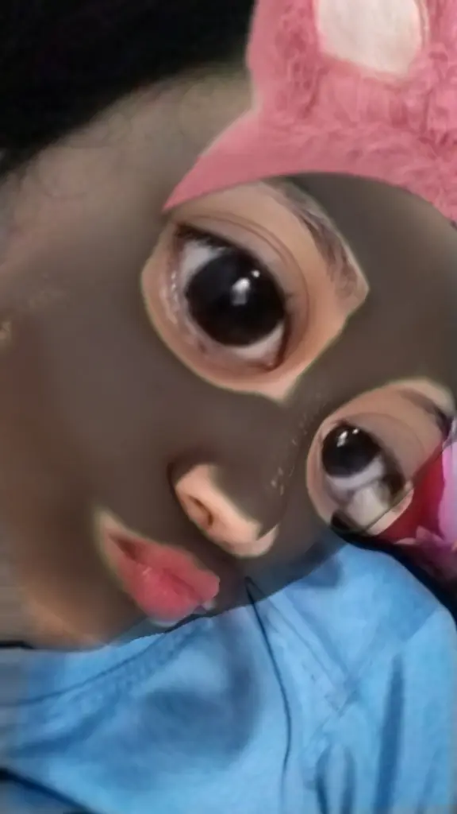
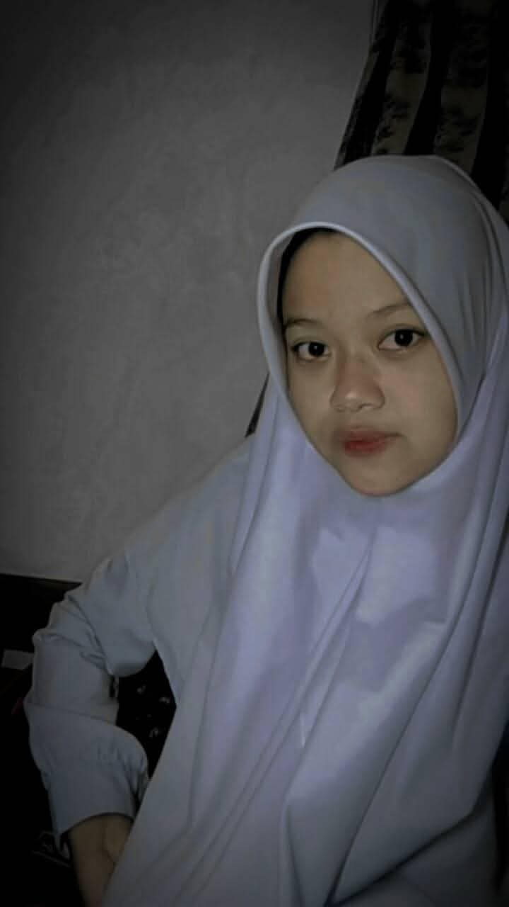
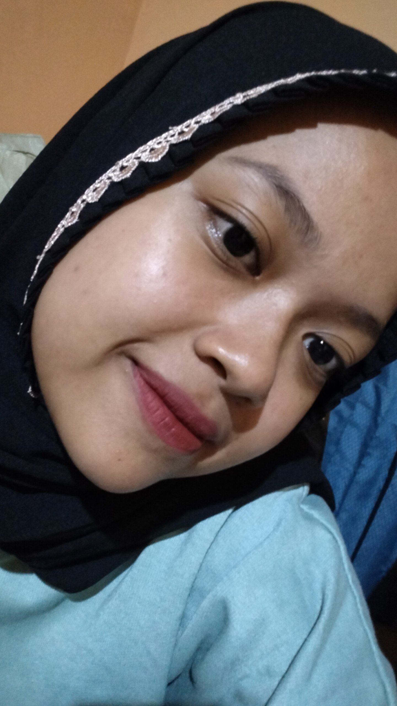
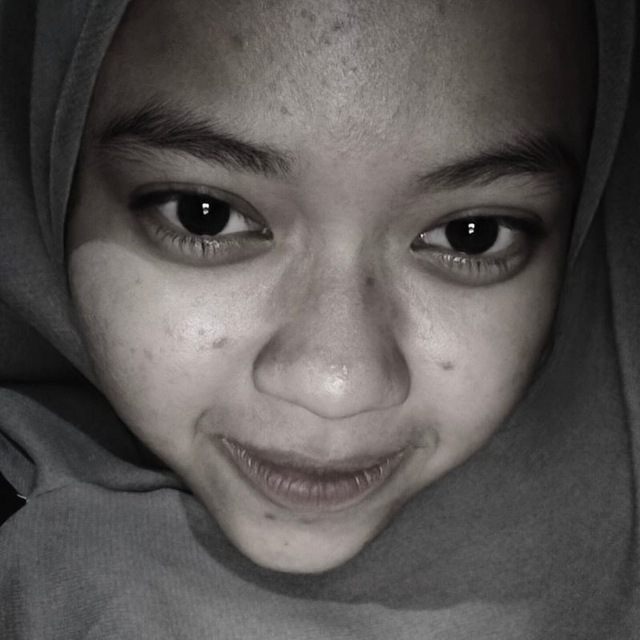

Ada sesuatu yang Mas siapkan khusus buat seseorang yang sangat berarti dalam hidup Mas.
Kalo ditanya bagaimana awal mula kita bertemu, mungkin ceritanya sederhana banget... Kita cuma dipertemukan lewat Telegram. Sesederhana itu. Tapi kalo Mas boleh jujur, saat pertama kali kita kenal, sebenarnya hati Mas sedang ngga baik-baik aja. Waktu itu Mas baru aja kehilangan kakak nya mas. Seseorang yang selama ini menjadi bagian dari hidup Mas, tiba-tiba harus pergi untuk selamanya. Mas masih ingat rasanya... Rumah terasa berbeda. Hari-hari terasa lebih sepi. Dan ada bagian dari hati Mas yang rasanya kosong banget. Mas engga tahu harus cerita ke siapa. engga tau harus mengadu kepada siapa. Bahkan terkadang Mas cuma bisa diam, menyimpan semuanya sendiri, sambil mencoba terlihat baik-baik aja di depan orang lain. Sampai akhirnya... Mas dipertemukan sama kamu. Awalnya Mas engga pernah berpikir kalo seseorang yang Mas kenal lewat sebuah aplikasi sederhana akan menjadi seseorang yang begitu berarti dalam hidup Mas. Kita cuma ngobrol. Tentang hal-hal kecil. Tentang keseharian. Tentang cerita yang mungkin waktu itu terlihat sederhana. Tapi entah kenapa, ngobrol sama kamu terasa berbeda. Pelan-pelan Mas mulai merasa nyaman. Mulai menunggu pesan dari kamu. Mulai tersenyum sendiri ketika melihat nama kamu muncul di layar. Dan tanpa Mas sadari... di saat hati Mas sedang kehilangan seseorang, Allah justru mempertemukan Mas dengan seseorang yang perlahan membuat hati Mas kembali punya alasan untuk tersenyum. Kamu mungkin ngga pernah tahu... Betapa berarti percakapan-percakapan kecil kita waktu itu. Mungkin buat kamu hanya sekadar chat biasa. Tapi buat Mas, di saat hati Mas sedang berantakan, kehadiran kamu terasa seperti seseorang yang datang tanpa diminta, tapi berhasil membuat kesepian itu sedikit lebih ringan. Mas nggak pernah merencanakan untuk jatuh hati. Mas juga nggak pernah menyangka seseorang yang awalnya cuma dikenal lewat Telegram, akhirnya bisa menjadi seseorang yang Mas takut kehilangan. Sampai akhirnya Mas sadar... ternyata kamu sudah punya tempat sendiri di hati Mas. Dan kalo hari ini Mas melihat kembali semuanya... Mas jadi percaya, mungkin pertemuan kita memang bukan sebuah kebetulan. Karena di saat Mas sedang kehilangan seseorang yang sangat Mas sayangi... Allah memperkenalkan Mas kepada seseorang yang kemudian ingin Mas jaga dan Mas sayangi seumur hidup. ❤️ Dan dari sebuah perkenalan yang sederhana itu... cerita kita pun dimulai.

**31 Oktober 2025.** Hari ketika kamu memberikan nomor WhatsApp kamu ke Mas. Kalau dipikir-pikir sekarang, kelihatannya sederhana banget, ya... Cuma sebuah nomor WhatsApp. Nggak ada yang istimewa dari sekadar deretan angka itu. Tapi ternyata, dari sanalah cerita kita perlahan mulai berubah. Sebelumnya, kita cuma ngobrol lewat Telegram. Saling menyapa, saling bertukar cerita, dan perlahan mulai mengenal satu sama lain. Sampai akhirnya, hari itu kamu memberikan nomor WhatsApp kamu ke Mas. Sejak saat itu, entah kenapa rasanya kita punya ruang yang lebih dekat untuk saling mengenal. Tempat untuk lebih banyak bercerita, lebih sering bertanya kabar, berbagi hal-hal kecil, sampai akhirnya tanpa kita sadari... jarak di antara kita perlahan menghilang. Dari yang awalnya cuma sekadar kenal, kita mulai menjadi semakin dekat. Dari yang awalnya hanya bertukar pesan, perlahan tumbuh rasa nyaman. Dan yang paling aneh... rasa nyaman itu tumbuh begitu saja. Tanpa pernah kita rencanakan. Tanpa pernah kita paksa. Bahkan mungkin, saat itu kita sendiri belum sadar kalau sedang berjalan menuju sesuatu yang lebih besar. Mas juga nggak tahu sejak kapan tepatnya Mas mulai merasa nyaman sama kamu. Nggak tahu kapan obrolan dengan kamu berubah menjadi sesuatu yang Mas tunggu-tunggu. Nggak tahu kapan kabar dari kamu mulai menjadi sesuatu yang bisa membuat hari Mas terasa lebih baik. Yang Mas tahu... semakin sering kita ngobrol, semakin Mas merasa bahwa kamu bukan lagi sekadar seseorang yang Mas kenal. Ada sesuatu dari kamu yang membuat Mas berpikir... **"Kayaknya, orang ini bakal jadi seseorang yang penting buat Mas."** Dan ternyata... feeling Mas waktu itu benar. Karena hari ini, ketika Mas melihat kembali tanggal **31 Oktober 2025**, Mas nggak lagi melihatnya sebagai sekadar hari ketika kamu memberikan nomor WhatsApp. Mas melihatnya sebagai salah satu tanggal penting dalam perjalanan hidup Mas. Hari ketika sebuah percakapan kecil perlahan berubah menjadi kedekatan. Hari ketika seseorang yang awalnya hanya Mas kenal lewat layar, perlahan menjadi seseorang yang begitu berarti. Hari ketika, tanpa kita sadari... **sebuah cerita tentang kita mulai ditulis.** Dan kalau hari ini Mas boleh mengulang waktu, Mas nggak akan pernah ingin mengubah apa pun dari hari itu. Karena kalau saat itu kamu nggak memberikan nomor WhatsApp kamu... mungkin kita nggak akan sedekat ini. Mungkin nggak akan ada begitu banyak cerita yang kita lewati bersama. Mungkin nggak akan ada tawa, tangis, rindu, salah paham, perjuangan, dan semua kenangan yang sekarang menjadi bagian dari perjalanan kita. Dan mungkin... Mas nggak akan pernah sampai pada titik di mana Mas bisa mengatakan: **"Aku bersyukur pernah dipertemukan dengan kamu."** Dari sekian banyak orang yang bisa Mas temui di dunia ini, Tuhan memilih mempertemukan Mas dengan kamu. Dan dari sekian banyak kemungkinan yang bisa terjadi... kita dipertemukan di waktu yang ternyata begitu berarti. Mas nggak tahu bagaimana akhir dari perjalanan panjang kita nanti. Tapi satu hal yang Mas tahu... **Mas bersyukur pernah menemukan kamu.** Bersyukur karena tanggal 31 Oktober 2025 pernah terjadi. Karena dari sebuah nomor WhatsApp yang kelihatannya sederhana... **lahir sebuah cerita yang sampai hari ini masih ingin Mas perjuangkan.** ❤️

Ada satu hal kecil yang mungkin waktu itu nggak pernah Mas anggap akan menjadi sesuatu yang begitu berarti. Sesuatu yang kelihatannya sederhana... Tapi ketika sekarang Mas mengingatnya kembali, ternyata hari itu menyimpan cerita tersendiri. **12 Juni 2025.** Hari ulang tahun Mas. Dan hari itu, untuk pertama kalinya... **kamu mengucapkan selamat ulang tahun ke Mas.** Mungkin buat kamu, itu cuma sebuah ucapan sederhana. Beberapa kata yang dikirim lewat chat. Sebuah pesan singkat untuk seseorang yang saat itu mungkin belum terlalu dekat denganmu. Mungkin setelah mengirimnya, kamu nggak pernah berpikir bahwa ucapan itu akan Mas ingat sampai hari ini. Tapi ternyata... Mas mengingatnya. Karena tanpa kamu sadari, ada sesuatu yang terasa berbeda dari ucapan itu. Bukan karena kata-katanya harus sempurna. Bukan juga karena pesannya panjang. Tapi karena ucapan itu datang dari seseorang yang kelak ternyata menjadi begitu berarti buat Mas. Lucunya... waktu itu kita bahkan belum tahu akan menjadi apa. Belum tahu apakah kita akan tetap menjadi dua orang yang hanya saling mengenal. Belum tahu apakah kita akan semakin dekat. Belum tahu apakah nanti akan ada begitu banyak cerita yang kita lewati bersama. Kita benar-benar nggak tahu. Kita hanya menjalani hari itu seperti biasa. Kamu mengucapkan selamat ulang tahun. Mas menerimanya dengan senang hati. Lalu hari-hari kembali berjalan seperti biasanya. Tapi ternyata... **Tuhan sedang menyimpan sesuatu yang jauh lebih indah dari yang kita bayangkan.** Karena siapa sangka, seseorang yang waktu itu hanya mengucapkan selamat ulang tahun... perlahan menjadi seseorang yang Mas tunggu kabarnya. Menjadi seseorang yang Mas cari ketika ingin bercerita. Menjadi seseorang yang membuat Mas merasa nyaman. Dan akhirnya... menjadi seseorang yang begitu Mas sayangi. Kalau sekarang Mas melihat kembali tanggal **12 Juni 2025**, Mas jadi sadar... Kadang, awal dari sebuah cerita besar memang nggak selalu datang dengan sesuatu yang luar biasa. Kadang, ia datang dari hal yang sangat sederhana. Dari sebuah pesan singkat. Dari sebuah ucapan. Dari seseorang yang mungkin saat itu belum kita sadari akan menjadi bagian penting dalam hidup kita. Dan mungkin... **ucapan ulang tahun itu adalah salah satu cara kecil Tuhan memperkenalkan kamu kepada Mas.** Sebelum akhirnya, beberapa bulan kemudian, tepat pada **31 Oktober 2025**, kamu memberikan nomor WhatsApp kamu kepada Mas. Dan sejak saat itu... cerita kita benar-benar mulai berjalan lebih jauh. Kalau dulu ucapanmu hanya membuat Mas tersenyum sebentar... sekarang, setiap kali mengingatnya, Mas justru tersenyum lebih lama. Karena Mas tahu... **di balik ucapan sederhana itu, ada awal kecil dari sebuah cerita yang sampai sekarang masih Mas perjuangkan.** Dan kalau suatu hari nanti kita benar-benar sampai di tempat yang selama ini kita doakan... Mas ingin kamu tahu satu hal: **Mas nggak pernah lupa bahwa salah satu bagian kecil dari perjalanan kita dimulai dari ucapan ulang tahunmu di tanggal 12 Juni 2025.** ❤️

**Kita pernah ada di masa di mana semuanya terasa nggak mudah.** Ada masa ketika kita sama-sama sedang punya masalah. Sama-sama sedang lelah. Sama-sama punya luka yang mungkin nggak selalu bisa kita ceritakan dengan baik. Ada saat di mana kita ingin dimengerti, tapi justru kesulitan memahami satu sama lain. Ada hari ketika senyum terasa begitu sulit. Ada percakapan yang awalnya biasa saja, tapi berakhir dengan air mata. Ada kata-kata yang mungkin sebenarnya nggak pernah kita maksudkan untuk menyakiti, tapi tetap saja meninggalkan luka. Dan mungkin... pernah ada satu titik di mana kita sama-sama bertanya dalam hati, **"Kita masih bisa bertahan nggak, ya?"** Mas juga nggak akan berpura-pura kalau perjalanan kita selalu indah. Nggak. Kita pernah kecewa. Pernah marah. Pernah salah paham. Pernah merasa nggak dimengerti. Pernah merasa ingin menyerah. Bahkan mungkin pernah ada saat di mana kita merasa bahwa jalan kita terlalu berat untuk terus dilalui bersama. Tapi ternyata... setiap kali keadaan mencoba menjauhkan kita, selalu ada sesuatu yang membuat kita kembali. Kembali bicara. Kembali mendengarkan. Kembali saling mencari. Dan akhirnya... **kembali saling menggenggam.** Dari sana Mas belajar satu hal. Bahwa mencintai seseorang ternyata bukan hanya tentang tertawa bersama ketika semuanya baik-baik saja. Bukan hanya tentang menikmati hari-hari indah. Bukan hanya tentang membuat kenangan yang manis. Tapi cinta juga tentang **tetap tinggal ketika keadaan sedang buruk.** Tentang tetap mendengarkan ketika salah satu dari kita sedang kecewa. Tentang mencoba memahami meskipun diri sendiri sedang ingin dimengerti. Tentang belajar meminta maaf meskipun ego masih tinggi. Tentang belajar memaafkan meskipun hati pernah terluka. Dan tentang memilih untuk tetap bersama... **bahkan ketika jalan yang kita lewati nggak selalu mudah.** Mas sadar... hubungan kita nggak sempurna. Kita juga nggak selalu menjadi pasangan yang sempurna. Mas pernah salah. Kamu juga pernah salah. Kita sama-sama pernah membuat satu sama lain kecewa. Tapi mungkin justru dari semua ketidaksempurnaan itu, Mas semakin mengerti arti sebenarnya dari kebersamaan. Karena kalau hubungan hanya bertahan ketika semuanya mudah... mungkin itu bukanlah bagian yang paling sulit. Yang benar-benar berarti adalah ketika keadaan menjadi berat, tapi kita masih berkata, **"Aku masih di sini."** Dan dari semua masa sulit yang pernah kita lewati... Mas semakin tahu satu hal. Mas nggak cuma sayang sama kamu ketika kamu sedang bahagia. Mas juga mau ada ketika kamu sedang jatuh. Ketika kamu sedang lelah. Ketika kamu sedang menangis. Ketika kamu merasa dunia terlalu berat. Ketika kamu sedang nggak tahu harus cerita kepada siapa. Mas ingin menjadi seseorang yang bisa kamu cari. Seseorang yang bisa kamu percaya. Seseorang yang bisa kamu genggam ketika semuanya terasa nggak baik-baik saja. Karena buat Mas... **cinta bukan tentang mencari seseorang yang membuat hidup kita selalu mudah.** Cinta adalah tentang menemukan seseorang yang membuat kita merasa... **"Seberat apa pun hidup ini, aku nggak harus melewatinya sendirian."** Dan mungkin, itulah salah satu alasan kenapa Mas masih memilih kamu sampai hari ini. Bukan karena perjalanan kita selalu sempurna. Tapi karena setelah semua yang kita lewati... **kita masih ada.** Masih saling mengenal. Masih saling belajar. Masih saling memperbaiki. Dan masih punya alasan untuk berharap tentang hari esok. Jadi... **terima kasih.** Terima kasih karena di saat hubungan ini diuji, kamu masih memilih untuk bertahan. Terima kasih karena meskipun pernah terluka, kamu masih mau membuka hati lagi. Terima kasih karena ketika keadaan memberi kita begitu banyak alasan untuk menyerah... **kamu masih memilih untuk menggenggam tangan Mas.** Dan kalau suatu hari nanti kita sampai pada titik di mana kita benar-benar melihat kembali perjalanan ini... Mas ingin kita mengingat satu hal: **Kita bukan pasangan yang nggak pernah menghadapi masalah.** Kita adalah dua orang yang pernah menghadapi banyak masalah... **tapi tetap memilih untuk saling menemukan jalan pulang.** Dan mungkin... itulah salah satu bentuk cinta yang paling ingin Mas jaga dari kita. ❤️
# Sampai Hari Ini ❤️ Nggak terasa ya... Dari awal kita kenal sampai hari ini, ternyata sudah sejauh ini perjalanan kita. Kalau dulu kita cuma dua orang yang saling mengenal lewat sebuah percakapan sederhana, sekarang kita sudah punya begitu banyak cerita yang bahkan mungkin nggak akan pernah bisa Mas ceritakan semuanya kepada siapa pun. Ada tawa. Ada tangis. Ada rindu. Ada kecewa. Ada salah paham. Ada hari-hari yang begitu indah. Dan ada juga hari-hari yang rasanya ingin sekali kita lewati secepat mungkin. Tapi semuanya... semuanya menjadi bagian dari perjalanan kita. Banyak banget yang sudah kita lewati. Banyak cerita yang nggak mungkin Mas lupakan. Banyak momen yang mungkin bagi orang lain terlihat biasa saja, tapi bagi Mas punya tempatnya sendiri di hati. Karena hanya kita yang tahu bagaimana rasanya melewati semua itu. Kalau Mas mengingat semuanya dari awal... Mas cuma bisa bilang, **"Ternyata kita hebat juga ya... bisa sampai sejauh ini."** Bukan karena perjalanan kita selalu mudah. Bukan karena kita selalu mengerti satu sama lain. Bukan karena kita nggak pernah saling menyakiti. Tapi karena setiap kali ada alasan untuk menyerah... kita selalu menemukan alasan lain untuk tetap bertahan. Dan hari ini... setelah semua yang kita lewati, **Mas masih memilih kamu.** Mas memilih kamu bukan karena Mas nggak melihat kekuranganmu. Mas tahu kamu punya kekurangan. Dan kamu juga tahu, Mas jauh dari kata sempurna. Tapi mungkin cinta memang bukan tentang menemukan seseorang yang sempurna. Cinta adalah ketika kita tahu seseorang punya kekurangan... tapi kita tetap ingin belajar memahaminya. Tetap ingin menjaganya. Tetap ingin memperbaiki diri bersamanya. Dan tetap ingin melihatnya ada di samping kita untuk waktu yang panjang. Itulah yang Mas rasakan tentang kamu. Mas nggak ingin mencintai kamu hanya untuk hari ini. Mas nggak ingin semua yang sudah kita lewati hanya menjadi sebuah cerita indah yang suatu hari nanti selesai begitu saja. Mas ingin cerita ini terus berjalan. Mas ingin kita masih punya banyak halaman yang belum kita tulis. Mas ingin suatu hari nanti kita bisa melihat kembali semua perjuangan ini sambil tersenyum dan berkata, **"Ternyata semua yang kita lewati dulu memang layak diperjuangkan."** Dan sekarang... Mas nggak cuma ingin kamu ada di cerita Mas hari ini. **Mas pengen kamu ada di masa depan Mas.** Mas ingin melihat kamu bukan hanya sebagai seseorang yang menemani Mas dalam perjalanan menuju masa depan... tapi sebagai seseorang yang **menjalani masa depan itu bersama Mas.** Mas ingin suatu hari nanti... kita nggak lagi sibuk menghitung berapa lama kita sudah bersama. Tapi sibuk menghitung berapa banyak tahun yang sudah kita lewati sebagai suami dan istri. Mas ingin suatu hari nanti bisa bangun dan melihat kamu ada di samping Mas. Pulang ke rumah yang sama. Makan bersama. Bercerita tentang hari yang kita jalani. Saling menguatkan ketika salah satu sedang lelah. Saling menjaga ketika salah satu sedang sakit. Tertawa karena hal-hal kecil. Bertengkar karena hal-hal sepele... lalu belajar berdamai dan kembali saling memeluk. Mas ingin membangun rumah yang bukan hanya punya dinding dan atap... tapi punya rasa nyaman. Tempat kita bisa pulang setelah dunia terasa melelahkan. Tempat di mana kita sama-sama merasa, **"Di sini aku aman. Di sini aku punya keluarga."** Mas ingin melewati hari-hari sederhana bersamamu. Bukan hanya hari ketika semuanya indah. Tapi juga hari ketika keadaan sedang sulit. Karena Mas nggak mencari kehidupan yang selalu sempurna. Mas cuma ingin... **menjalani kehidupan itu bersama kamu.** Mas pengen menikah sama kamu. Bukan karena Mas ingin sekadar mengubah status hubungan kita. Tapi karena setelah semua yang kita lewati, Mas mulai melihat kamu bukan hanya sebagai seseorang yang Mas cintai... **tapi sebagai seseorang yang ingin Mas perjuangkan untuk menjadi bagian dari hidup Mas selamanya.** Mas nggak tahu kapan tepatnya semua itu akan terjadi. Mas nggak tahu jalan menuju sana akan seperti apa. Mungkin masih banyak yang harus kita persiapkan. Mungkin masih banyak yang harus kita perbaiki dari diri kita masing-masing. Tapi Mas nggak ingin menjanjikan sesuatu yang Mas sendiri belum tahu kapan waktunya. Yang bisa Mas katakan dengan sungguh-sungguh adalah... **kalau Allah SWT memberikan kesempatan, memudahkan langkah kita, dan mengizinkan kita sampai ke sana...** **kamu adalah orang yang ingin Mas ajak berjalan sampai akhir.** Mas ingin memperjuangkan kamu dengan cara yang baik. Mas ingin hubungan ini punya tujuan. Mas ingin suatu hari nanti bisa datang dengan niat yang benar, meminta izin kepada keluargamu, dan mengucapkan dengan penuh keyakinan: **"Ini perempuan yang ingin saya jadikan istri."** Dan kalau hari itu benar-benar datang... Mas ingin mengingat kembali semua yang pernah kita lewati. Tanggal **12 Juni 2025**, ketika kamu pertama kali mengucapkan selamat ulang tahun kepada Mas. Tanggal **31 Oktober 2025**, ketika kamu memberikan nomor WhatsApp kamu. Semua percakapan. Semua tawa. Semua air mata. Semua pertengkaran. Semua perjuangan. Semua doa. Dan semua alasan yang membuat kita tetap bertahan sampai hari ini. Lalu Mas ingin melihat kamu dan berkata... **"Ternyata kita sampai juga."** Sampai di tempat yang dulu mungkin hanya berani kita bayangkan. Sampai di titik di mana seseorang yang dulu hanya Mas kenal lewat sebuah percakapan... akhirnya benar-benar menjadi **istri Mas.** Dan kalau nanti kehidupan pernikahan kita nggak selalu mudah, Mas ingin kita kembali mengingat semua ini. Bahwa sebelum menjadi suami dan istri... kita pernah menjadi dua orang yang belajar untuk saling memahami. Pernah hampir menyerah. Pernah terluka. Tapi memilih untuk memperbaiki. Karena Mas percaya... **pernikahan bukan akhir dari perjuangan kita.** Pernikahan adalah awal dari perjuangan yang baru. Perjuangan untuk terus memilih satu sama lain setiap hari. Dan kalau Allah SWT benar-benar memberikan kesempatan itu kepada kita... Mas ingin menjalani perjuangan itu bersama kamu. Sampai rambut kita mulai memutih. Sampai langkah kita nggak lagi sekuat sekarang. Sampai suatu hari nanti kita duduk berdua dan melihat kembali semua foto, semua cerita, dan semua kenangan yang pernah kita buat... lalu tersenyum karena ternyata kita sudah melewati begitu banyak hal bersama. Jadi setelah sejauh ini... Mas nggak ingin cuma punya kamu untuk hari ini. **Mas ingin punya kamu untuk hari-hari yang masih panjang setelah hari ini.** Untuk hari esok. Untuk tahun-tahun berikutnya. Untuk masa depan yang belum kita tahu bentuknya seperti apa. Dan kalau Allah SWT mengizinkan... **untuk seluruh sisa perjalanan hidup Mas.** Karena dari sekian banyak kemungkinan yang ada di dunia ini... kalau Mas boleh memilih satu hal untuk diperjuangkan sampai akhir, **Mas ingin itu adalah kamu.** Bukan karena Mas tahu perjalanan kita akan selalu mudah. Tapi karena Mas tahu... **dengan kamu, Mas ingin terus berjalan.** **Hari ini, besok, dan insyaAllah sampai selamanya.** ❤️






Beberapa percakapan sederhana... tapi punya tempat spesial di hati Mas ❤️
Mungkin cuma sebuah chat tapi buat Mas, setiap kata dari kamu selalu punya cerita sendiri. 🥺❤️
Hari ini mungkin hanya terlihat seperti bertambahnya satu angka di usiamu. Tapi buat Mas, hari ini jauh lebih berarti dari itu. Karena di hari ini, bertahun-tahun yang lalu, Allah SWT menghadirkan seorang perempuan ke dunia... yang suatu hari nanti ternyata akan menjadi seseorang yang begitu berarti dalam hidup Mas.
Sayang... Di hari ulang tahunmu ini, Mas cuma ingin kamu tahu satu hal. Mas bersyukur kamu pernah dilahirkan. Karena kalau hari itu kamu nggak ada... mungkin Mas nggak akan pernah mengenal seseorang seperti kamu. Nggak akan pernah tahu rasanya punya seseorang yang bisa membuat hati merasa nyaman hanya dengan sebuah pesan sederhana. Nggak akan pernah tahu rasanya menunggu kabar seseorang, khawatir ketika dia sedang nggak baik-baik saja, dan tersenyum hanya karena melihat namanya muncul di layar. Dan mungkin... Mas nggak akan pernah tahu bahwa ternyata ada seseorang yang bisa menjadi begitu berarti dalam hidup Mas. Jadi hari ini, selain mengucapkan selamat ulang tahun... Mas juga ingin mengucapkan sesuatu kepada Allah: "Terima kasih sudah menghadirkan dia ke dunia." Terima kasih karena dari begitu banyak manusia yang ada di dunia ini... Mas diberi kesempatan untuk mengenal kamu.
Sayang... Mas nggak tahu apa saja yang sudah kamu lewati selama hidupmu. Mungkin ada luka yang nggak pernah kamu ceritakan. Ada tangis yang kamu sembunyikan. Ada malam-malam ketika kamu merasa sendirian. Ada hal-hal yang kamu perjuangkan diam-diam tanpa siapa pun tahu betapa beratnya. Tapi hari ini... Mas ingin kamu berhenti sebentar. Tarik napas. Lihat kembali sejauh mana kamu sudah berjalan. Kamu berhasil sampai di hari ini. Dan Mas bangga sama kamu. Bangga karena kamu masih bertahan. Masih tersenyum. Masih berusaha. Masih menjadi kamu yang terus menjalani hidup meskipun nggak semua hari terasa mudah. Jadi di usia barumu ini... jangan terlalu keras sama dirimu sendiri, ya. Kalau suatu hari kamu merasa lelah, istirahatlah. Kalau kamu ingin menangis, menangislah. Kalau dunia terasa terlalu berat, jangan merasa kamu harus selalu kuat. Kamu manusia. Kamu boleh lelah. Kamu boleh menangis. Dan kamu boleh meminta seseorang untuk menemanimu. Mas berharap...
semoga setelah ini hidup lebih banyak memberikanmu alasan untuk tersenyum daripada alasan untuk menangis. Semoga Allah mengganti setiap air mata yang pernah jatuh dengan kebahagiaan yang jauh lebih besar. Semoga setiap luka yang pernah kamu simpan perlahan sembuh. Semoga setiap doa yang pernah kamu bisikkan dalam kesunyian, satu per satu menemukan jalannya untuk menjadi kenyataan. Semoga rezekimu dilancarkan. Semoga langkahmu dimudahkan. Semoga kesehatan selalu menyertaimu. Semoga orang-orang baik selalu dipertemukan denganmu. Dan yang paling Mas doakan... semoga Allah selalu menjagamu, bahkan di saat Mas belum mampu menjagamu. Kalau suatu hari nanti kamu merasa hidupmu nggak berarti... ingatlah bahwa ada seseorang yang sangat bersyukur karena kamu ada. Ada seseorang yang senang pernah mengenalmu. Ada seseorang yang menganggap kehadiranmu sebagai salah satu hadiah yang nggak pernah dia sangka akan dia dapatkan. Dan orang itu... Mas.
Selamat bertambah usia, sayangku. ❤️ Semoga usia barumu membawa kamu semakin dekat dengan semua hal yang kamu impikan. Semoga kamu mendapatkan kebahagiaan yang selama ini kamu cari. Semoga kamu selalu punya alasan untuk tersenyum. Dan semoga... di antara semua doa yang kamu panjatkan di hari ulang tahunmu ini, ada satu doa tentang masa depan yang akhirnya Allah kabulkan. Mas nggak tahu apa yang akan terjadi di hari-hari setelah ulang tahunmu ini. Tapi Mas berharap... ketika kamu membuka mata di setiap pagi yang baru, kamu selalu merasa bahwa hidup masih layak untuk diperjuangkan. Karena masih banyak kebahagiaan yang menunggumu. Masih banyak tempat yang ingin kamu datangi. Masih banyak cerita yang belum kamu tulis. Dan masih banyak hari ulang tahun yang ingin Mas ucapkan kepadamu.
Selamat ulang tahun, perempuan yang Mas sayang. ❤️ Terima kasih sudah lahir ke dunia. Terima kasih sudah menjadi dirimu sendiri. Dan terima kasih karena, dari sekian banyak manusia di dunia ini... kamu adalah salah satu orang yang Allah izinkan untuk Mas kenal dan Mas sayangi.
Semoga panjang umur. Semoga sehat selalu. Semoga bahagia selalu. Semoga Allah menjaga setiap langkahmu. Dan semoga senyum yang ada di wajahmu hari ini... menjadi senyum yang terus menemani kamu sampai bertahun-tahun ke depan. Selamat ulang tahun, sayangku. Semoga Allah selalu menjagamu. Hari ini, besok, dan di setiap usia yang akan kamu lewati. ❤️
Mas tidak tahu bagaimana perjalanan kita ke depannya.
Tapi Mas tahu satu hal...
Mas ingin tetap berjalan bersamamu.
Mas ingin melihat kamu tersenyum, menemani kamu melewati hari-hari sulit, membangun kehidupan bersama, dan suatu hari nanti...
memanggilmu bukan hanya sebagai kekasih, tapi sebagai istrinya Mas.